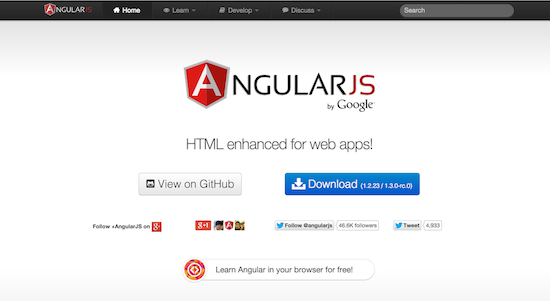
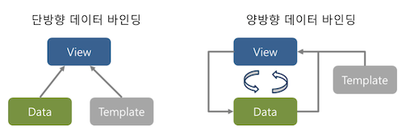

AngularJS
AngularJS는 웹 애플리케이션 개발에 필요한 여러 기능을 제공하는 오픈 소스 자바스크립트 프레임워크다.
제이쿼리와 같은 자바스크립트 라이브러리와 다른 점은 우리의 코드가 AngularJS를 직접 호출 하기보다는 우리가 작성한 코드를 AngularJS가 호출하는 것이다. 즉, 우리의 코드가 AngularJS라는 뼈대에 살을 채워 웹 어플리케이션이 만들어 진다.다음은 AngularJS 공식 사이트의 소개 페이지에서 발췌한 라이브러리와 프레임워크를 설명하는 글이다.
- 라이브러리: 제이쿼리와 같은 웹 애플리케이션을 개발할 때 유용한 함수의 집합이다. 여러분이 작성한 코드가 필요 시점에 이 함수를 직접 호출하고 애플리케이션 전체 흐름을 제어한다.
- 프레임워크: 웹 애플리케이션의 특정 구현체다. 여러분이 작성한 코드가 상세 구현으로 프레임워크의 빈 부분을 채운다. 프레임워크가 여러분이 작성한 코드를 필요 시점에 호출하고 애플리케이션 전체 흐름을 제어한다. AngularJS와 더불어 knockout.js와 ember.js도 프레임워크라 하겠다.
지금까지 HTML, 자바스크립트, CSS만으로는 화려하고 편리한 사용자 인터페이스를 제공하는 웹 애플리케이션을 개발하기 매우 어려웠다. 그래서 ActiveX와 플래시와 같은 기술에 의존하여 리치rich한 웹 애플리케이션을 개발했다. AngularJS는 이러한 리치 웹 애플리케이션을 위해 만들어지지 않은 HTML의 부족한 부분을 채우고자 만들어졌다. 다음은 AngularJS가 제공하는 주요 기능이다.
- 템플릿
- 양방향 데이터 바인딩
- MVC 구조
- 지시자directive를 이용한 HTML 확장
- 의존관계 주입Dependency Injection
- 단일 페이지 웹 애플리케이션을 위한 라우터Router
- $q를 이용한 자바스크립트 비동기 프로그래밍 지원
- 자바스크립트 테스팅 지원
- CSS3 Animation 처리 지원
- 모바일 터치 이벤트 지원
AngularJS 설치하기
AngularJS를 다운로드하기 위해선 AngularJS 공식 사이트인 www.angularjs.org에 접속한다. 브라우저를 통해 접속하면 다음 그림 같은 화면을 볼 수 있을 것이다.

위 그림에서 보는 것과 같이 파란색 큰 다운로드 버튼을 이용해서 AngularJS를 다운로드 할 수 있다. 다운로드 버튼을 클릭하면 브렌치branch, 빌드build를 선택하여 다운로드 하거나 CDN정보나 Bower 인스톨 정보를 확인할 수 있는 모달modal창이 나타난다. 별도의 다운로드 없이 CDN 정보로 HTML 스크립트 태그에 경로로 입력하여 AngularJS를 적용할 수 도 있으나 본 글에서는 AngularJS를 다운로드하여 적용하는 것을 설명하겠다. 글을 작성하는 시점에는 AngularJS는 1.2.x와 1.3.x 두 개의 브렌치로 나누어 진다. 최신 버전은 1.3.x이나 IE8을 지원하기 위해서는 1.2.x 버전의 AngularJS를 사용해야 한다. 그럼 1.2.x 브렌치와 zip 빌드로 선택하고 다운로드 버튼을 클릭하자. 그리고 압축을 풀면 아래 그림과 같을 것이다.

위 그림에서 보는 것과 같이 많은 자바스크립트 파일과 개발자문서 폴더, i18n 다국어 파일폴더 등을 볼 수 있다. AngularJS를 적용하기 위해서 모든 자바스크립트 파일이 필요로 하지는 않는다. 기본 프레임워크만 적용하기 위해서는 angular.js 또는 압축된minified 버전인 angular.min.js 둘 중 하나만 HTML 스크립트 태그로 작성하면 된다.
사용자관리 어플리케이션
사용자관리 어플리케이션은 CRUD 웹 어플리케이션을 좋은 예이다. 사용자 정보를 조회하고 입력하고 수정하고 삭제하는 CRUD 웹 어플리케이션에 AngularJS를 적용해보면서 AngularJS 기본 기능을 파악해보자. 다음 그림은 완성된 사용자관리 어플리케이션의 모습이다.

사용자관리 어플리케이션의 기능은 아래와 같다.
- 화면 상단에서 검색 버튼을 클릭하면 사용자 정보를 조회한다.
- 화면 상단에서 추가 버튼을 클릭하면 아래 테이블에 새로운 행이 추가되고 사용자 정보를 입력하면 사용자 정보가 추가된다.
- 테이블의 각 행의 마지막 열에 있는 2개의 버튼 중 왼쪽 수정버튼을 클릭하면 사용자 정보를 수정할 수 있다.
- 테이블의 각 행의 마지막 열에 있는 2개의 버튼 중 오른쪽 삭제버튼을 클릭하면 사용자 정보를 삭제할 수 있다.
다음 코드는 사용자관리 어플리케이션의 정적인 HTML 코드이다. 개발 편의상 트위터 부트스트랩을 사용하였다. 트위터 부트스트랩에 대한 자세한 내용은 부트스트랩 공식 홈페이지을 참고하기 바란다.
<!doctype html>
<html>
<head>
<meta charset="UTF-8">
<title>사용자 관리 DEMO APP</title>
<link rel="stylesheet" href="libs/bootstrap/css/bootstrap.min.css">
<link rel="stylesheet" href="resources/app.css">
<script type="text/javascript" src="libs/angular/angular.js"></script>
</head>
<body>
<div class="searchBox">
<div class="row-fluid borBox">
<div class='span12'>
<div class='form-horizontal centerOnPage' style="margin-left: -203px;">
<ul class="input-append">
<input type="text" placeholder="이름" size="16">
<button class="btn btn-info box" type="button">
<i class='icon-white icon-search'></i>
</button>
</ul>
<button class="btn btn-info box" type="button">
<i class='icon-white icon-plus'></i>
</button>
</div>
</div>
</div>
</div>
<div class="container-fluid">
<div class="row-fluid">
<div class="span12">
<table class="table table-striped table-hover">
<thead>
<tr>
<th>#</th>
<th>이름</th>
<th>E-Mail</th>
<th>가입 날짜</th>
<th>수정</th>
<th>삭제</th>
</tr>
</thead>
<tbody>
<tr>
<td>1</td>
<td><input type="text" value="가인"></td>
<td><input type="email" value="gain@naver.com"></td>
<td><input type="date" value="2014-06-30"></td>
<td class="center">
<button class="btn btn-danger" type="button">
<i class='icon-white icon-pencil'></i>
</button>
<button class="btn btn-info">
<i class='icon-white icon-ok'></i>
</button>
</td>
<td class="center">
<button class="btn btn-danger" type="button">
<i class='icon-white icon-trash'></i>
</button>
</td>
</tr>
<tr>
<td colspan="6" style="text-align :center">
<span class="text-warning">데이터가 없습니다.</span>
</td>
</tr>
</tbody>
</table>
</div>
</div>
</div>
<body>
</html>사용자관리 어플리케이션 프로젝트를 다운로드 하기 위해서는 https://github.com/jeado/web-angular-sample 에서 다운로드 한다. 그럼 이제 정적인 페이지에 불과한 index.html에 AngularJS를 적용하여 동적인 웹 어플리케이션으로 변경하여 보자.
AngularJS 적용
정적인 페이지인 index.html에 AngularJS를 적용하기 위해서는 AngularJS에서 제공하는 특별한 속성을 사용해야 한다. 바로 ng-app 이다. AngularJS를 적용하고자 하는 최상위 DOM 노드에 속성으로 ng-app을 작성한다.
이렇게 ng-app을 작성하였으면 해당 HTML문서를 템플릿으로서 작성을 할 수 있다. 그럼 템플릿에 대하여 보도록 하자.
템플릿 작성
AngularJS는 템플릿을 통하여 데이터를 어떻게 표현할지 기술한다. 템플릿은 표현식과 AngularJS가 제공하는 별도의 속성 혹은 태그들로 이루어 지는데 HTML문서를 작성하는 것은 곧 템플릿을 작성하는 것과 같다.
템플릿 = 표현식 + 별도 속석/태그다시말하면 index.html에 표현식과 ng-app과 같은 별도의 속성 혹은 태그를 작성하면 index.hmlt 템플릿을 작성하는 것이다. 그럼 표현식에 대하여 살펴보자.
AngularJS는 자바스크립트 표현식과 비슷한 AngularJS 표현식을 제공한다. 표현식은 일반적으로 이중 중괄호 {{ }} 안에서 작성을 한다. 하지만 ng-init과 같은 특별한 속성들은 값으로 표현식을 요구한다.
그럼 {{ }}을 이용하여 표현식을 기술해 보자. 가령 다음과 같은 코드가 있다.
<h1>Hello {{ person.name }}</h1>위 코드를 읽으면 “Hello라는 문자열 옆에 person 객체의 name 속성값을 구해서 h1의 크기로 화면에 출력한다.”라고 읽을 수 있다. 이렇게 이중 중괄호 안에 객체 및 객체 속성에 접근하는 표현식을 기술할 수 있는데 이렇게 작성된 템플릿을 AngularJS가 실제 person 객체의 name 속성의 값을 읽어 DOM을 만든다. AngularJS 표현식은 자바스크립트 표현식과 비슷한데 자바스크립트 표현식은 자바스크립트 값이 될 올 바른 한 단위로서의 코드이다. 다음은 종류별로 나열한 자바스크립트 표현식이다.
- x = 1: 변수에 값을 대입하는 표현식
- 3+4 혹은 2.45: 숫자 연산 및 숫자 표현
- "hello" 혹은 "hello"+"angular": 문자 표현 및 문자 연산
- true 혹은 !true 혹은 true || true: 논리 연산 및 논리 표현
- objectA.propertyA: 객체 및 객체 속성 접근
AngularJS의 표현식은 자바스크립트의 표현식과 대부분 비슷하여 위의 표현식이 모두 사용가능 하다. 하지만 일부 차이점이 있는데 다음 목록이 그 차이점이다.
- 객체의 접근: 기본적으로 자바스크립트는 모든 객체를 최상위 객체인 window 객체 안에서 찾는다. 이와 반 대로 AngularJS는 표현식에 사용된 객체를 $scope 안에서 찾는다.
- undefined와 null 무시: 자바스크립트 표현식으로 obejectA.propertyA라고 작성했다고 하자. 만약 objectA가 선언되어 있지 않으면 objectA는 undefined일 것이다. Undefined에서 propertyA에 접근하려 했으니 자바스크립트에서는 오류가 발생한다. 이와 다르게 AngularJS는 오류를 발생시키지 않고 무시해 버린다.
- 제어문을 작성할 수 없다.
- 필터 사용이 가능하다. 필터는 파이프(|)를 이용해서 표현식에서 사용할 수있다. 가령 money가 있고 2000이라는 값이 할당돼 있다고 하자. 이때 2000을 2,000원 혹은 $2,000로 표현하고 싶을 때 우리는 currency 필터를 사용할 수 있다. 템플릿에서 {{money | currency }}와 같은 방식으로 작성하면 된다.
이제 본격적으로 템플릿을 작성해 보자. 우선 화면에 표출할 사용자 정보를 정의하자
<body ng-init='userList=[{ name : "고재도", email : "haibane84@gmail.com", regDate : "2013-01-20" }]' >
<!-- AngularJS에서 제공하는 ng-init 속성에 userList 배열을 표현하는 표현식을 기술하여 userList 배열을 정의한다. -->ng-init 속성은 일종의 Main 메소드와 같다. 해당 템플릿을 해석할 때 호출되는대 이때 주어진 표현식을 해석한다.
다음으로 사용자목록 정보인 userList 배열을 테이블의 각 행으로 표현하는 표현식을 작성해 보자. AngularJS에서는 반복적인 데이터를 표현하기 위해 ng-repeat 속성을 제공한다. 다음 리스트를 index.html의 table 태그의 tbody 태그 안의 tr 태그 다음에 추가하여 정적인 데이터를 위해 작성된 HTML과 userList 배열을 동적으로 표현하기 위해 작성된 템플릿을 비교해보자.
<tr ng-repeat="user in userList">
<!-- AngularJS의 ng-repeat은 속성값으로 for in 루프처럼 작성하는 특별한 표현식을 값으로 주어야 한다. 해당 표현식은 userList 배열의 배열요소만큼 <tr> 요소와 요소내부를 반복하여 표현한다. <tr> 요소와 <tr>요소 내부에서 각 배열요소는 user로 참조할 수 있다. -->
<td>{{ $index+1 }}</td>
<!-- $index는 ng-repeat이 적용된 요소에서 사용할 수 있는 특별한 이름이다. 배열요소의 인덱스 값을 가지고 올 수 있다. 0부터 시작하기 때문에 +1을 하여 1부터 시작하도록 작성한다. -->
<td><input type="text" ng-model="user.name"></td>
<!-- ng-model을 통하여 해당 <input> 요소와 사용자 객체의 name속성과 데이터 바인딩을 하였다. 자세한 내용은 이어지는 “양방향 데이터바인딩”에서 자세히 다루도록 하겠다. -->
<td><input type="email" ng-model="user.email"></td>
<td><input type="date" ng-model="user.regDate"></td>
<td class="center">
<button class="btn btn-danger" type="button">
<i class='icon-white icon-pencil'></i>
</button>
<button class="btn btn-info" type="button">
<i class='icon-white icon-ok'></i>
</button>
</td>
<td class="center">
<button class="btn btn-danger" type="button">
<i class='icon-white icon-trash'></i>
</button>
</td>
</tr>변경사항을 저장하고 브라우저에서 index.html 파일을 읽으면 다음 그림과 같은 결과를 확인할 수 있다.

사용자 목록을 보여주는 테이블을 보면 첫 번째 행은 정적으로 표현된 행이고 두 번째 행은 uesrList 배열에 의하여 추가된 행임을 알 수 있다. 다음으로 userList의 값이 없으면 “데이터가 없습니다.”가 표현되고 있으면 표현이 안되도록 템플릿을 수정하여 보자. 그리고 정적으로 테이블 행을 표현한 코드는 삭제하도록 하자.
<tr ng-show="!userList.length">
<!-- AngularJS는 ng-show를 제공하여 ng-show 속성값의 표현식의 계산된 결과가 true이면 해당 요소의 CSS의 display 속성을 none으로 한다. -->
<td colspan="6" style="text-align :center">
<span class="text-warning">데이터가 없습니다.</span>
</td>
</tr>사용자 관리 웹 어플리케이션의 기능을 더 구현하기 앞서 AngularJS의 양방향 데이터 바인딩에 대하여 보겠다.
양방향 데이터 바인딩
데이터 바인딩이란 두 데이터 혹은 정보의 소스를 모두 일치시키는 기법이다. 즉 화면에 보이는 데이터와 브라우저 메모리에 있는 데이터를 일치시키는 기법인데 앞의 예제에서 userList 브라우저 메모리에 있는 데이터가 화면에 테이블의 행으로서 보이는 데이터가 일치된 것이 데이터 바인딩이라고 볼 수 있다. 대부분 자바스크립트 프레임워크에서는 브라우저 메모리에 있는 데이터가 화면에 표출되도록 하는 단방향 데이터 바인딩을 제공한다. 하지만 AngularJS에서는 양방향 데이터 바인딩을 제공한다. 즉 화면에 표출된 데이터를 변경하면 자동으로 메모리에 있는 데이터까지 변경되는 것이다. 간단히 아래의 코드를 추가하여 확인해 보자.
</table>
{{userList}}
<!-- 메모리상에 존재하는 userList 배열을 표현하는 표현식이다. -->
</div>다시 브라우저로 index.html을 열고 테이블이 첫 번째 행의 이름 열의 값을 변경해 보면 아래 JSON형식으로 표현된 userList가 동시에 변경되는 것을 확인할 수 있다. 다음 그림은 단방향 데이터 바인딩과 양방향 데이터 바인딩을 설명해준다.

위 그림에서 보는 바와 같이 데이터data가 변경되면 데이터와 템플릿template이 결합되어 화면view이 자동으로 갱신되고 화면의 데이터가 변경되면 메모리상의 데이터가 변경되어 다시 템플릿과 결합되어 화면을 변경하게 되는 것이다. 그럼 이제 사용자 관리 어플리케이션의 비즈니스 로직을 처리하는 코드를 구현하기 위해 MVC 패턴에 대하여 살펴보도록 하자.
MVC 패턴
AngularJS는 MVC 패턴을 통하여 웹 어플리케이션을 개발하도록 한다. 이때 비즈니스 로직을 구현현하는 컨트롤러를 위해 ng-controller라는 별도의 속성을 제공한다. AngularJS에서 컨트롤러는 많은 일을 하지 않는다. 단 하나의 역할 즉, 어플리케이션의 로직을 담당한다. 이를 다르게 설명하면 컨트롤러는 모델의 상태를 정의, 변경한다고 할 수 있다. 이제 우리의 사용자 관리 웹 어플리케이션에 컨트롤러를 적용해 보자. 우선 다음과 같이 새로운 자바스크립트 파일을 만들고 index.html에 스크립트 태그를 추가하자.
-index.html-
<script type="text/javascript" src="libs/angular/angular.js"></script>
<script type="text/javascript" src="app.js"></script>
<!-- app.js를 만들고 index.html에 스크립트 태그로 추가한다. -->
</head>-app.js-
function mainCtrl($scope) {
$scope.userList = [
{ name : '가인', email : 'gain@naver.com', regDate : '2014-06-30' }
];
}이제 ng-controller를 통해 특정 DOM에 컨트롤러 함수를 연결한다. 그리고 ng-init을 통하여 userList의 초기 상태를 정의한 코드는 삭제한다.
<body ng-controller="mainCtrl">브라우저에서 어플리케이션을 다시 읽으면 이전과 같은 결과를 볼 수 있을 것이다. 하지만 mainCtrl 함수를 작성할 때 의아한 점이 있었을 것이다. 해당 함수의 인자에 $scope은 무엇이고 이 $scope의 속성으로 userList 배열을 정의하였는데 어떻게 userList가 템플릿에서 사용되고 mainCtrl 함수는 누가 호출하는 것일까? 이제 우리는 모델에 대하여 볼 것이다.
AngularJS에서 모델은 사용자 정보, 도서 정보, 북마크 정보처럼 하나의 엔터티Entity나 여러 개의 엔터티이다. 그리고 이러한 엔터티를 AngularJS에서는 별다른 상속 없이 순수 자바스크립트 객 체로 표현한다. 하지만 중요한 점은 이러한 모델 객체는 $scope 객체로부터 접근할 수 있어야 한다는 것이다. 앞에서 mainCtrl 함수를 정의할 때 함수 안의 $scope객체에 우리는 userList 배열을 속성으로 정의하였다. 이는 userList 모델을 정의하였다고 볼 수 있다. 그리고 $scope객체는 AngularJS가 로드될 때 ng-controller에 연결된 함수를 찾아 실행하면서 프레임워크 내부에서 생성하여 함수의 인자로 주입시켜준다. 즉 우리가 만든 컨트롤러 함수가 AngularJS 프레임워크에 사용되는 것이다. 이렇게 정의된 모델은 템플릿과 연결되어 DOM을 만드는데 이 DOM이 뷰가 된다. 다음 그림은 MVC 요소 별 상호관계와 어플리케이션 구성 요소와 MVC 요소와의 관계를 보여준다.

이제 새로운 사용자를 입력하는 로직을 추가하여 보자. 새로운 사용자를 입력하기 위해서는 상단의 추가버튼을 클릭한다. 그러면 새로운 행이 테이블에 추가되고 행의 오른쪽 바다색의 체크모양 버튼을 클릭하면 새로운 사용자 데이터가 추가된다. 새로 입력이 가능한 행과 기존 조회된 행을 구분하기 위해서 수정모드 먼저 추가하겠다. 즉, 조회된 데이터는 입력이 불가능하고 새로 추가되거나 수정하는 행만 입력이 가능케 한다.
<td><input type="text" ng-model="user.name" ng-disabled="!user.edit"></td>
<!--
ng-disable를 추가하여 userList 배열요소 객체에 edit 속성의 false이면 입력을 막는다. -->
<td><input type="email" ng-model="user.email" ng-disabled="!user.edit"></td>
<td><input type="date" ng-model="user.regDate" ng-disabled="!user.edit"></td>브라우저에서 어플리케이션을 다시 읽으면 첫 행의 입력필드가 모두 비활성화 된 것을 볼 수 있을 것이다. 이제 새로운 사용자를 추가하는 로직을 app.js에 추가하자.
$scope.insert = function() {
$scope.userList.push({ edit : true });
};앞의 app.js에서 우리는 insert 함수를 만들었다. 이 함수는 어플리케이션 사용자가 상단의 추가버튼을 클릭하면 호출되어야 한다 이때 우리는 클릭 이벤트와 컨트롤러에서 정의한 행위를 연결시켜주기 위해 ng-click을 이용할 수 있다.
<button class="btn btn-info box" type="button" ng-click="insert()">
<i class='icon-white icon-plus'></i>
</button>브라우저에서 어플리케이션을 다시 읽고 추가버튼을 클릭하면 새로운 행이 추가되는 것을 볼 수 있다. 이제 새로운 행에 사용자 정보를 입력하고 체크버튼을 클릭하는 부분을 구현해보자. 먼저 app.js에 입력완료를 처리하는 로직을 구현하자.
$scope.complete = function (user) {
user.edit = false;
};다음으로 바다색 체크버튼을 클릭할 때 complete함수를 호출하도록 템플릿을 수정하자.
<button class="btn btn-info" type="button" ng-click="complete(user)">
<i class='icon-white icon-ok'></i>
</button>다음으로 사용자정보 수정기능을 추가하자. 사용자 정보를 수정하는 기능은 단순히 행의 빨간색 연필모양 버튼을 클릭하면 사용자 정보의 edit 속성을 true로 바꾸기만 하면 된다. 왜냐하면 사용자 정보와 연결된 입력요소의 ng-disabled가 edit 속성을 주시하고 있다가 값이 true가 되면 해당 입력요소를 활성화 시키기 때문이다. 그러면 입력요소와 데이터 바인딩이 되어있는 사용자 정보를 변경할 수 있고 변경 시 데이터 바인딩 때문에 userList 모델의 값도 같이 변경된다. 다음은 수정 기능이 추가된 app.js와 index.html 코드이다.
-app.js-
$scope.edit= function (user) {
user.edit = true;
};-index.html-
<button class="btn btn-danger" type="button" ng-click="edit(user)">
<i class='icon-white icon-pencil'></i>
</button>이제 사용자 추가와 사용자 수정기능을 모두 구현하였다. 하지만 지금까지 구현한 어플리케이션을 브라우저에서 보면 알 수 있겠지만 각 사용자 행에 있는 수정버튼과 입력완료 버튼이 동시에 보일 필요는 없다. 행이 수정 모드일 때는 입력완료 버튼이 보이면 되고 조회된 데이터에만 수정모드로 가도록 수정버튼이 보이면 된다. 간단히 템플릿만 수정하여 해당 기능을 추가해보자.
<td class="center">
<button class="btn btn-danger" type="button" ng-show="!user.edit" ng-click="edit(user)">
<!-- 사용자 정보 목록인 userList 배열에서 각 배열요소의 edit 속성 값이 false이면 수정버튼을 보여준다. -->
<i class='icon-white icon-pencil'></i>
</button>
<button class="btn btn-info" ng-show="user.edit" type="button" ng-click="edit(user)">
<!-- 사용자 정보 목록인 userList 배열에서 각 배열요소의 edit 속성 값이 true이면 입력완료 버튼을 보여준다. -->
<i class='icon-white icon-ok'></i>
</button>
</td>이제 마지막으로 사용자 데이터를 삭제하는 기능을 추가해 보자.
-app.js-
$scope.del = function (index) {
$scope.userList.splice(index, 1);
//배열요소에서 해당 인덱스에 해당하는 값을 삭제한다.
}-index.html-
<button class="btn btn-danger" type="button" ng-click="del($index)">
<i class='icon-white icon-trash'></i>
</button>